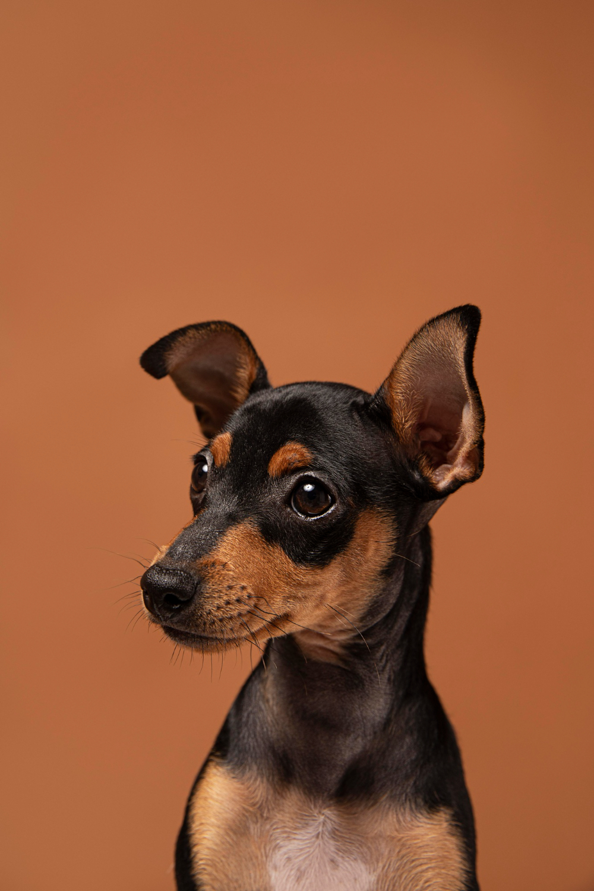
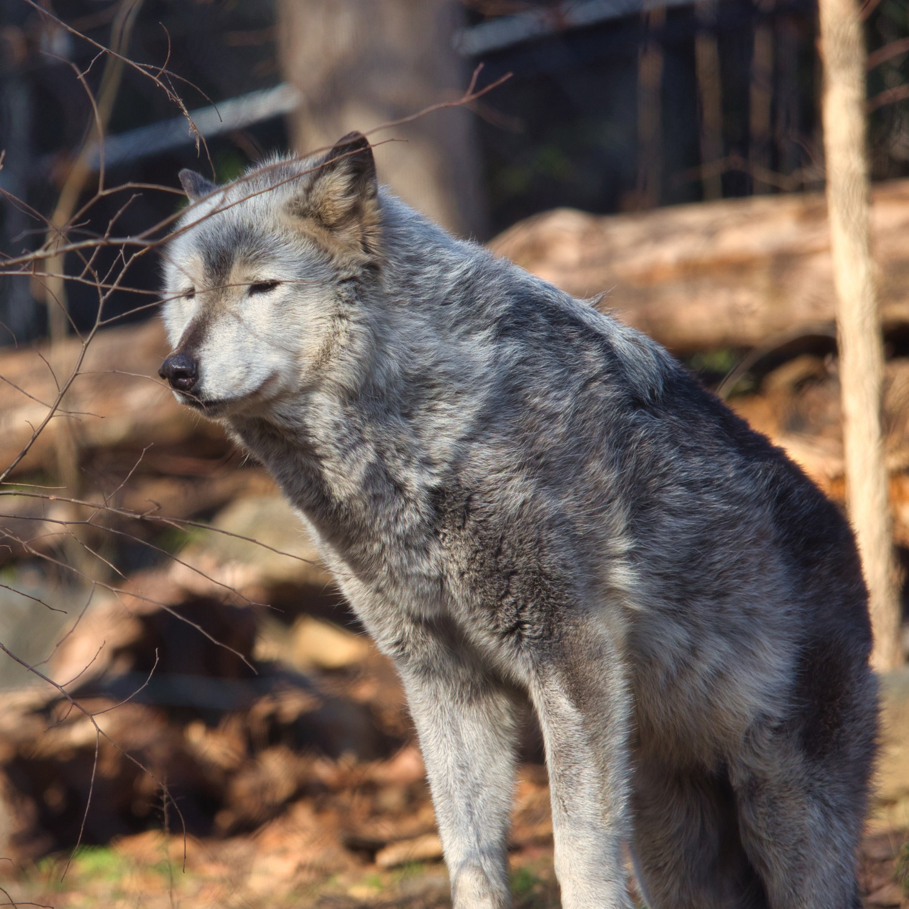
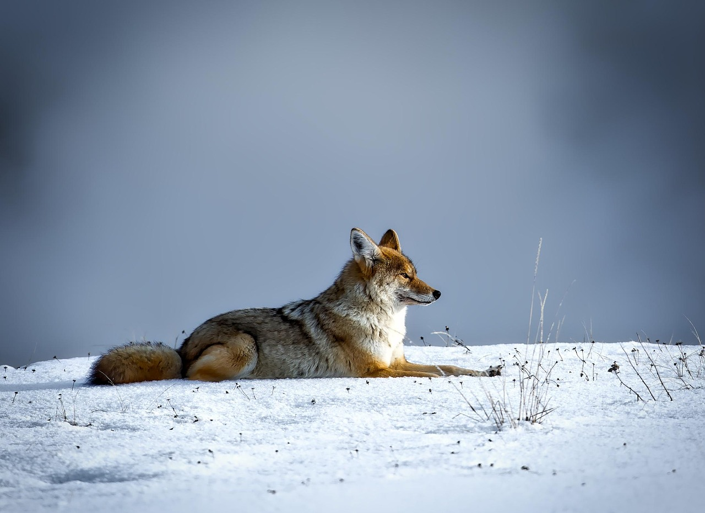
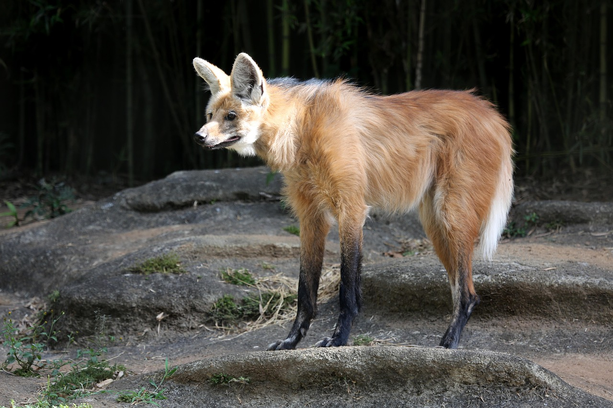

Animais Caninos
- 
- 
- 
-

-

- 
Cachorro doméstico
O cão doméstico (Canis lupus familiaris) é muito mais do que um animal de estimação; ele é o primeiro e mais antigo aliado da humanidade. Estima-se que essa parceria tenha começado há mais de 15 mil anos, quando lobos cinzentos começaram a conviver com grupos de caçadores-coletores em busca de alimento e proteção mútua.
Ao longo dos séculos, essa relação transformou o lobo em uma explosão de diversidade: desde o minúsculo Chihuahua até o gigante Dogue Alemão. O que torna o cachorro realmente "legal" é a sua inteligência social. Eles são uma das poucas espécies capazes de entender gestos humanos, como apontar, e possuem uma sensibilidade única para interpretar nossas emoções através do tom de voz e expressões faciais.
Lobo cinzento
O lobo-cinzento (Canis lupus) é o maior membro selvagem da família dos canídeos e o ancestral direto de todos os cães domésticos. Ele é um dos animais mais icônicos e estudados do mundo, conhecido por sua inteligência e complexa estrutura social.
Diferente do mito do "lobo solitário", esses animais são extremamente sociais e vivem em alcateias que são, na verdade, unidades familiares compostas por um casal líder (os pais) e seus filhos de diferentes anos. Dentro dessa hierarquia, o casal principal toma as decisões de caça e defesa do território, enquanto o grupo todo trabalha unido para cuidar dos filhotes e derrubar presas muito maiores que eles, como alces e bisões. Até mesmo o famoso uivo tem uma função prática: em vez de ser um chamado para a lua, ele serve como uma ferramenta de comunicação para reunir a família, localizar membros perdidos ou alertar outros grupos para que mantenham distância de seus domínios.
Coiote
O coiote (Canis latrans) é um dos canídeos mais versáteis da América do Norte, sendo mundialmente famoso por sua incrível capacidade de adaptação. Menor que um lobo e mais esguio que um cão doméstico, ele é um sobrevivente nato que consegue prosperar em quase qualquer ambiente, desde desertos áridos e florestas densas até o centro de grandes metrópoles urbanas. Sua dieta é extremamente variada, incluindo desde pequenos roedores e frutas até carniça, o que lhe permite encontrar alimento onde outros predadores falhariam.
Conhecido como "cão cantor", o coiote possui uma comunicação fascinante composta por uma mistura de uivos agudos, latidos e guinchos que podem ser ouvidos a longas distâncias. Ao contrário dos lobos, que vivem em alcateias rígidas, os coiotes são mais independentes e flexíveis, podendo caçar sozinhos, em pares ou em pequenos grupos familiares. Essa inteligência e comportamento oportunista fizeram com que sua população se expandisse por quase todo o continente, tornando-os figuras centrais no folclore e na ecologia americana.
Lobo-vermelho
O lobo-vermelho (Canis rufus) é um dos canídeos mais raros e ameaçados do mundo. Nativo do sudeste dos Estados Unidos, ele possui um porte intermediário, sendo maior que um coiote e menor que o lobo-cinzento. Sua característica mais marcante é a pelagem em tons de canela e marrom-avermelhado, especialmente visível atrás das orelhas e nas patas, o que lhe confere uma aparência única e elegante.
Infelizmente, a espécie chegou a ser declarada extinta na natureza em 1980 devido à caça intensa e à perda de habitat. Graças a programas de reprodução em cativeiro, alguns indivíduos foram reintroduzidos na Carolina do Norte, mas eles continuam em perigo crítico de extinção. Estima-se que existam menos de 25 exemplares vivendo livremente hoje, o que torna cada nascimento uma grande vitória para a conservação da fauna mundial.
Raposas
As raposas são canídeos de pequeno e médio porte, conhecidas pela agilidade e por uma inteligência que lhes rendeu a fama de animais astutos no folclore mundial. Diferente dos lobos e cães, elas possuem pupilas verticais e o hábito de caçar sozinhas, utilizando uma audição aguçada para localizar presas até mesmo sob camadas espessas de neve ou terra.
Com uma incrível capacidade de adaptação, as raposas ocupam habitats que vão desde o calor escaldante do Saara até o frio extremo do Ártico. Elas são animais oportunistas e onívoros, alimentando-se de roedores, aves, insetos e frutos. Essa versatilidade permite que vivam em harmonia com os humanos, sendo comum encontrá-las até em jardins de grandes áreas urbanas ao redor do mundo.
Lobo-guará
O lobo-guará (Chrysocyon brachyurus) é o maior canídeo da América do Sul e um dos símbolos mais importantes da fauna brasileira. Típico do Cerrado, ele se destaca pela sua aparência elegante, com pernas muito longas e finas que o ajudam a caminhar sobre a vegetação alta, além de uma pelagem laranja-avermelhada marcante e uma "juba" de pelos pretos nas costas que se levanta quando ele se sente ameaçado.
Ao contrário de seus parentes distantes, os lobos-cinzentos, o guará é um animal solitário e pacífico, que não vive em alcateias e raramente entra em conflito com humanos. Outra característica curiosa é sua dieta: ele é onívoro e consome grandes quantidades de frutos, especialmente a "fruta-do-lobo" (Solanum lycocarpum), que ajuda a combater parasitas. Por espalhar as sementes desses frutos através de suas fezes, ele desempenha um papel fundamental como reflorestador natural do seu habitat.